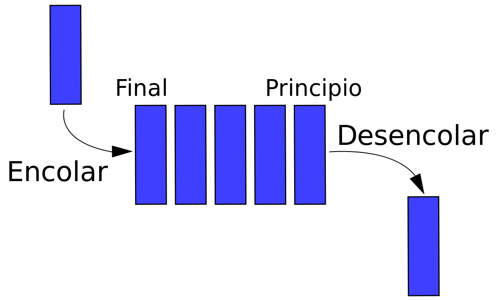

<!DOCTYPE html>
<html lang="en">
  <head>
    <meta charset="utf-8" />
    <meta name="viewport" content="width=device-width, initial-scale=1.0, maximum-scale=1.0, user-scalable=no" />

    <title>Colas</title>
    <link rel="shortcut icon" href="./favicon.ico"/>
    <link rel="stylesheet" href="./dist/reveal.css" />
    <link rel="stylesheet" href="./dist/theme/league.css" id="theme" />
    <link rel="stylesheet" href="./css/highlight/zenburn.css" />
    <link rel="stylesheet" href="./_assets/slides/css/filminas.css" />

  </head>
  <body>
    <div class="reveal">
      <div class="slides"><section  data-markdown><script type="text/template">
# Colas

<small>Created by
    <a href="https://t.me/rmarku" target="_blank">
        <i class="fab fa-telegram-plane"></i>rmarku
    </a>
</small>

</script></section><section  data-markdown><script type="text/template">
## Colas

Una cola es una colección ordenada de elementos en la que pueden insertarse elementos en un extremo (FONDO)
y suprimirse elementos por el otro extremo (FRENTE)



</script></section><section  data-markdown><script type="text/template">
## Colas

Las colas son estructuras que se encuentran frecuentemente en la vida diaria. Algunos ejemplos se encuentran en la
fila de un banco, un grupo de automóviles esperando en una cab ina de peaje, personas esperando para comprar un
boleto pa ra el cine, etc.


</script></section><section  data-markdown><script type="text/template">
## Colas

Por ejemplo, la forma en que se acomodan los coches que llegan a una cabina de peaje es la siguiente:
se puede añadir un coche al final de la cola, y el primero que se va es el que está al principio de la cola . O sea
que el primero que llego es el primero que se va.

</script></section><section  data-markdown><script type="text/template">
## Colas

La propiedad anterior se conoce como **FIFO** ( First In First Out ), es decir, el primero en entrar será el
primero en salir.


</script></section><section  data-markdown><script type="text/template">
## Colas
<table>
    <tr>
        <td><b>encolar(x)</b></td>
        <td>Inserta el elemento por el Fondo de la cola.</td>
    </tr>
    <tr>
        <td><b>x=desencolar()</b></td>
        <td>Saca un elemento por el frente de la cola y lo almacena en x</td>
    </tr>
    <tr>
        <td><b>estaVacia()</b></td>
        <td>Devuelve V/F según si está vacía la cola.</td>
    </tr>
</table>

</script></section><section  data-markdown><script type="text/template">
## Colas
#### Formas de implementar

* Mediante arreglos: 
  Se mantiene un índice de entrada y uno de la salida.
* Mediante Nodos enlazados:
  Se mantiene un puntero al primer nodo y uno al ultimo nodo.

</script></section><section  data-markdown><script type="text/template">
## Colas
## A implementar.
</script></section></div>
    </div>

    <script src="./dist/reveal.js"></script>

    <script src="./plugin/markdown/markdown.js"></script>
    <script src="./plugin/highlight/highlight.js"></script>
    <script src="./plugin/zoom/zoom.js"></script>
    <script src="./plugin/notes/notes.js"></script>
    <script src="./plugin/math/math.js"></script>
    <script>
      function extend() {
        var target = {};
        for (var i = 0; i < arguments.length; i++) {
          var source = arguments[i];
          for (var key in source) {
            if (source.hasOwnProperty(key)) {
              target[key] = source[key];
            }
          }
        }
        return target;
      }

      // default options to init reveal.js
      var defaultOptions = {
        controls: true,
        progress: true,
        history: true,
        center: true,
        transition: 'default', // none/fade/slide/convex/concave/zoom
        plugins: [
          RevealMarkdown,
          RevealHighlight,
          RevealZoom,
          RevealNotes,
          RevealMath
        ]
      };

      // options from URL query string
      var queryOptions = Reveal().getQueryHash() || {};

      var options = extend(defaultOptions, {"controls":true,"progress":true,"slideNumber":true}, queryOptions);
    </script>

    <script src="./_assets/slides/js/pruebas.js"></script>
    <script src="./_assets/slides/js/init.js"></script>

    <script>
      Reveal.initialize(options);
    </script>
  </body>
</html>
